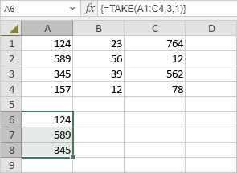

TAKE Funkcija
TAKE funkcija je jedna od funkcija za pretragu i reference. Koristi se da vrati redove ili kolone iz početka ili kraja niza.
Sintaksa
TAKE(array, rows, [columns])
TAKE funkcija ima sledeće argumente:
| Argument | Opis |
|---|---|
| array | Postavlja niz iz kojeg će se uzeti redovi ili kolone. |
| rows | Postavlja broj redova koji će se uzeti. Negativna vrednost uzima redove sa kraja niza. |
| columns | Postavlja broj kolona koji će se uzeti. Negativna vrednost uzima kolone sa kraja niza. |
Napomene
Imajte na umu da je ovo formula niza. Za više informacija pročitajte članak Umetanje formula niza.
Kako primeniti TAKE funkciju.
Primeri
Slika ispod prikazuje rezultat koji vraća TAKE funkcija.
